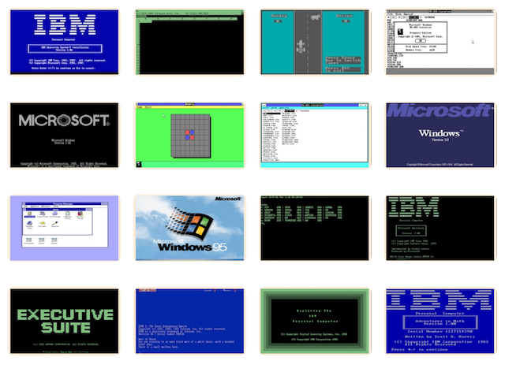

Home of the original IBM PC emulator for browsers.
This disk contained a prototype version of OS/2 from February 1987, code-named FOOTBALL (aka PIGSKIN). It predated the completion of OS/2 1.0 by some eight months and was based on the SIZZLE fork, which started around November 1986.
On startup, FOOTBALL displays the following banner:
CP-DOS version 1.0
Copyright 1986,1987 Microsoft Corp.
PIGSKIN Internal revision 7.68.17, 87/02/26
See Booting FOOTBALL for startup instructions, and the FOOTBALL Design Document for an internal description of the prototype.
Most of the work on this prototype occurred between December 1, 1986 and February 28, 1987, with the principal goal of demonstrating multiple DOS applications running in V86-mode to BillG; that demo probably occurred in March 1987. However, another underlying goal was to demonstrate to IBM that Microsoft was ahead of the curve on 32-bit design considerations for OS/2. Up to this point, all OS/2 design and development work had been 16-bit, since the dominant state-of-the-art Intel CPU at the time was the 80286.
The FOOTBALL prototype was based on pre-1.0 OS/2 sources, and the only hardware it supported was the COMPAQ DeskPro 386-16. The source code was later sent to IBM, who in early April 1987 was adapting it to run on the Model 80 PS/2.
After OS/2 1.0 was finished in October 1987, FOOTBALL changes were merged into a fresh set of 1.0 sources, which initially was version 1.3 (also known as PIGSKIN and later CRUISER) but ultimately became version 2.0.
A directory listing of this disk is provided below.
[PCjs Machine "deskpro386"]
Waiting for machine "deskpro386" to load....
Click the “Run” button on the COMPAQ DeskPro 386 above to the start the machine and begin the boot process.
The OS/2 kernel debugger is built into the FOOTBALL kernel and automatically connects to COM2, which is captured by the PCjs Debugger output window:
bx=001d, cx=f905, dx=0700, cs=1770, ds=1b10
NoHighMem=0000
BIOS is new EXE file
seg loadseg srcseg seg/sel reladdr psize/vsize delta
1: 1090 1090 0100/0100 00002345 00001345/00001346 00000000
2: 11d0 11d0 0300/0300 000088d3 000058d3/000058e0 00000000
3: 1770 1770 0900/0900 0000c922 00003922/00003922 00000000
4: 1b10 1b10 0d00/0d00 0000ec01 00001c01/000025e0 00000000
devlist=0100:1327, 3xdevlist=0300:0504, buffers=0003, orgfinalseg=083c
dosloadseg=1800, finalseg=0900, mem=640k/3072k, defdrive=0001
Driver='SCREEN$ ' link=0100:0e26,attr=8082,strat=4be6,intr=004e,ds/cs=0100/0300
Driver='KBD$ ' link=0100:0e86,attr=c881,strat=3108,intr=28aa,ds/cs=0100/0300
Driver='PRN ' link=0100:0000,attr=8880,strat=4542,intr=0000,ds/cs=0100/0300
Driver='CLOCK$ ' link=0100:0108,attr=8088,strat=004f,intr=004e,ds/cs=0100/0300
Driver='# devs=4' link=0100:0ea0,attr=2080,strat=0e9e,intr=004e,ds/cs=0100/0300
Driver='LPT1 ' link=0100:0eba,attr=8880,strat=4542,intr=0000,ds/cs=0100/0300
Driver='LPT2 ' link=0100:0ed4,attr=8880,strat=454b,intr=0000,ds/cs=0100/0300
Driver='LPT3 ' link=ffff:ffff,attr=8880,strat=4554,intr=0000,ds/cs=0100/0300
about to transfer to 9c00:$ (new ds/ss=9900) ...done
DOS is new EXE file
seg loadseg srcseg seg/sel reladdr psize/vsize delta
1: 1820 1820 0900/0900 0000fbc9 00006bc9/00006bc9 00000000
2: 1f20 1f20 1000/1000 0001610f 0000610f/00006709 00000000
3: 2560 2560 1700/0108 0001b973 00004973/00004973 00000000
4: 2a00 2a00 1c00/0110 0001f7fe 000037fe/000037fe 00000000
5: 2d80 2d80 2000/0118 00020d1e 00000d1e/00000d38 00000000
6: 2e60 2e60 2100/0120 00021054 00000054/00000054 00000000
7: 2e80 2e80 2200/0128 000242c8 000022c8/000022c8 00000000
8: 3100 3100 2500/0130 000258b4 000008b4/000008b4 00000000
9: 31a0 31a0 2600/0138 000288dc 000028dc/0000dc62 00000000
10: 0000 0000 3400/0140 00000000 00000000/0000900c 00000000
11: 3480 3e00 3e00/0148 00048109 0000a109/0000a109 00009800
12: 3ee0 4900 4900/0150 000529f8 000099f8/000099f8 0000a200
13: 4900 5320 5300/0158 00056ee8 00003ee8/00003ee8 0000a200
DosInit=2200:010a
System Debugger 11/20/86 - Processor is: 386
AX=01000900 BX=00000148 CX=00000150 DX=00000120 SI=00000158 DI=00001436
IP=00000483 SP=0000200A BP=00000000 CR2=00000000 CR3=00000 IOPL=3 F=-- --
CS=0128 SS=0048 DS=0138 ES=1000 FS=0000 GS=0000 -- NV UP DI PL NZ AC PE NC
0128:0483 C3 RET
#
At this point, the kernel debugger has stopped the boot process and is waiting for commands. Click on the output window and type “g” and press Enter to continue booting. The following additional debugger messages should appear:
PageInit: arenainfo=0048:21c4, dgroup=00026000
lastpaddr=00400000, NPAGETABLES=0004
0403 PFT entries @0098:0000 (3024 bytes)
0700 VALID pages=4000 to 5c00
08fa AOD pages=5c00 to 7fe8
Page directory at 00029000 (0138:3000)
Paging enabled
PFT moved to 0098:0000 (3024 bytes)
Freeing laddr=0040c000, size=002f4000
Freeing laddr=00057000, size=00042000
Swap_Pte=7ff8(4094) base=00ffe000, Copy_Pte=7ff0(4092) base=00ffc000, sel=00a0
free=0336, virtual=1321, lockable=0322, maxswap=0100, swap=0fff
PageReinit(dgroup laddr=00fc1000)
Page directory at 0006f000 (0138:3000)
Paging enabled
Symbols linked (IBMDOSD)
If you don’t see the above output, including final Symbols linked (IBMDOSD) message, then something went wrong.
Otherwise, the version banner should appear on the machine’s screen. After any CONFIG.SYS messages, SHELL.EXE should
display:
The first option will start CMD.EXE, and the second option will start COMMAND.COM. To return to the SHELL, press the
Sys Req key. Since modern keyboards don’t have that key, you will need to click the Keyboard button to display the
PCjs soft keyboard, and then click the Sys key in the top right corner of that keyboard.
Volume in drive A has no label
Directory of A:\
IBMBIO COM 50689 2-27-87 3:49p
IBMDOS COM 216962 2-27-87 3:48p
OSO001 MSG 40730 2-27-87 12:24p
ANSICALL EXE 3165 2-27-87 11:34a
BKSCALLS EXE 3611 2-27-87 11:51a
BMSCALLS EXE 2064 2-27-87 11:55a
BVSCALLS EXE 11710 2-27-87 12:02p
DOSCALL1 EXE 7071 2-27-87 12:03p
KBDCALLS EXE 4138 2-27-87 12:04p
MONCALLS EXE 5655 2-27-87 12:09p
MOUCALLS EXE 5177 2-27-87 12:16p
QUECALLS EXE 11508 2-27-87 12:28p
SESMGR EXE 25744 2-27-87 12:41p
SHELL EXE 4096 2-27-87 12:43p
VIOCALLS EXE 9833 2-27-87 12:47p
CMD EXE 47056 11-17-86 1:52p
VT52 SYS 3205 10-27-86 3:57p
IBMDOS SYM 50692 2-27-87 3:48p
COUNTRY SYS 6175 11-03-86 8:32p
MSG EXE 5824 11-03-86 8:36p
NLS EXE 3124 11-03-86 8:37p
SWAPPER EXE 4150 2-25-87 8:04p
EXEHDR EXE 23242 10-17-86 2:24p
COMMAND COM 23724 10-27-86 3:57p
CONFIG SYS 90 2-27-87 4:14p
POINTDD SYS 4240 11-03-86 7:28p
VDISK SYS 4662 11-03-86 7:28p
PGSWP32 EXE 7570 2-02-87 12:20p
LIN EXE 8084 2-12-87 3:00p
MAIN EXE 32482 11-14-86 12:44p
DELETED *<DIR> 2-20-87 5:10p
CPGREP EXE 25286 10-21-86 9:08p
32 file(s) 651759 bytes
Directory of A:\DELETED
. <DIR> 2-20-87 5:10p
.. <DIR> 2-20-87 5:10p
INDEX 32 2-20-87 5:12p
DELETED 000 121 2-20-87 3:47p
DELETED 001 113 2-20-87 5:10p
5 file(s) 266 bytes
Total files listed:
37 file(s) 652025 bytes
549888 bytes free
From the PCjs Archives: the following text is from an email titled “3xBox Design Document” sent to the Microsoft football alias on Saturday, February 28, 1987, at 5:02pm.
Overview
--------
The goal for this research project was to demonstrate the feasability of
supporting multiple virtual DOS 3.x machines on a 286DOS-based kernel running
on an 386 personal computer. Each "3xBox" would have its own virtual screen,
keyboard, interrupt vectors, and address space. Furthermore, well- behaved
DOS 3.x applications that do text (as opposed to graphic) screen output would
run in the background.
In order to acheive this goal in a reasonable amount of time, we started from
the 286DOS "sizzle" kernel and made the minimum amount of changes necessary,
both in code and fundamental design. The resulting DOS will be referred to
as "386DOS" in this paper.
386DOS provides up to four 3xBoxes, depending upon the available RAM. More
3xBoxes could be supported if a slight change is made to the method of
allocating page tables.
Well-behaved DOS 3.x applications (i.e., MS-Multiplan, MS-Word, Lotus 1-2-3)
can run in the background, multi-tasking against one another and against the
foreground screen group. Lotus 1-2-3 (version 2.01) passes its floppy-based
copy protection when in the foreground.
It should be noted that 386DOS, while functional, is not an optimal design/
implementation of multiple 3xBoxes. In particular, interrupt management, the
device driver model, and the existence of V86-mode kernel code should be
modified before 386DOS is made a commercial product.
Unless stated otherwise, most of the concepts extant in 286DOS apply to 386DOS.
V86 Mode and the 386
----------------------
The 386 CPU has three distinct execution modes: REAL, PROT, and V86. REAL
and PROT modes are largely compatible with the corresponding modes of an 286.
V86 modes is exactly the same as RING 3 PROT mode, with the following
differences:
o Memory Address Hierarchy
A 386 has three levels of memory addresses:
- Virtual (Intel refers to this as Logical)
This is either the selector:offset or segment:offset address used
by unprivledged machine language code.
- Linear
This is the 32-bit address arrived at either via a GDT/LDT
selector lookup, or via the 8086-compatible (seg << 4 + offset).
- Physical
This is the 32-bit address arrived at by pushing a linear address
through the paging mechanism. This is the address that the CPU
sends out on the bus to select physical memory.
When in V86 mode, the CPU performs the 8086-compatible computation.
o I/O instructions are NOT IOPL-sensitive
Trapping of I/O is done using the IO Permission Map.
o All instructions which modify or expose the Interrupt Flag ARE IOPL-
sensitive.
This allows the OS to simulate the Interrupt Flag, if desired.
V86 IRETD Frame
---------------
When any interrupt, trap, exception, or fault occurs in V86 mode, the CPU
switches to PROT mode and switches to the TSS Ring 0 Stack and builds the
following stack frame:
(0) (old GS)
(0) (old FS)
(0) (old DS)
(0) (old ES)
(0) (old SS)
(old ESP)
(old EFLAGS)
(0) (old CS)
(old EIP) <- (SS:SP)
CPU Mode Determination
----------------------
A new implementation of the WHATMODE macro was written in order to distinguish
between the three CPU modes: REAL, PROT, and V86. REAL mode is indicated by
a 0 PE bit in CR0 (a.k.a. MSW on a 286). If the PE bit is 1, then the mode
may be either PROT or V86. These two modes may be distinguished by attempting
to change the IOPL bits in the FLAGS word. At Ring 0 in PROT mode (the only
place WHATMODE is used), the IOPL may be changed. In V86 mode, IOPL cannot
be changed. So, we change IOPL and then check to see if it changed. If so,
PROT mode, else V86 mode.
CPU Mode Switching
------------------
The 286DOS kernel relies extensively on switching inbetween REAL and PROT.
This functionality is provided by the RealMode and ProtMode routines.
In 386DOS, RealMode is no longer needed. As soon as we switch to PROT mode
during SysInit, the CPU only uses PROT and V86 modes.
Two new routines, ProtToV86 and V86ToProt, that are analogous to RealMode and
ProtMode. ProtToV86 is quite straightforward. We build a V86 IRETD frame
on the stack with the VM bit set in the EFLAGS image. We set the SS:SP
image to be equivalent to the stack just above the V86 IRETD frame, and
set the CS:IP image to instruction following an IRETD. Then, we issue the
IRETD and the CPU continues processing following the IRETD and in V86 mode.
V86ToProt is a bit trickier. The only way to get out of V86 mode is to
trap or fault or issue a software interrupt. We chose to use a software
interrupt, 30h, which we call the V86 Services interrupt. The INT 30h entry
in the IDT is a ring 3 interrupt gate, so issuing an INT 30 from V86 mode
causes a V86 IRETD frame to be built on the TSS Ring 0 stack and control
transfers to the INT 30h vector. The handler verifies that the INT 30h
was issued by the V86ToProt routine (checks CS:IP on the stack). If not,
the interrupt is reflected back to the requesting 3xBox (See Interrupt
Reflection). If it was V86ToProt, we clean off the stack frame and return to
the caller. NOTE: V86 Services is also used for completing the 386 LOADALL
used by PhysToVirt to map "high" memory in "REAL" mode.
Stack Switching
---------------
In order to maintain the 286DOS mode switch and stack switch semantics
when V86 mode is used, we have a new stack (the V86 Stack) in the 3xBox PTDA.
286DOS Modes and Stacks
-----------------------
The RealMode and ProtMode procedures in 286DOS are the only ways to switch
the CPU execution mode. These routines both maintain SS:SP, allowing
RealMode and ProtMode to be reentrant. The TSS Ring 0 stack is always the
current TCB stack in the current PTDA. The only other stacks in the system
are the Interrupt Stack and user stack(s).
386DOS Modes and Stacks
-----------------------
In 386DOS, any interrupt or exception while in V86 mode causes a switch to
PROT mode and the TSS Ring 0 Stack. So we have a new way to mode switch with
an incompatible stack semantic. We had to fix this mode switch to make it
compatible with 286DOS.
Observation
-----------
In V86 mode, the current stack must not be the TSS Ring 0 Stack. The CPU
only leaves V86 mode via an interrupt/exception, which causes a stack switch
to the TSS Ring 0 Stack. If the current stack was the same as the TSS Ring 0
Stack, then the stack might get corrupted. In 286DOS, the Ring 0 Stack is
the PTDA. Since we run on this stack in V86 mode, we need a new Ring 0 stack
when a 3xBox is running.
Approach
--------
1) When a PMBox is running, the TSS Ring 0 Stack is a PTDA TCB stack.
+ This is consistent with the 286DOS model.
2) When a 3xBox is running, the TSS Ring 0 Stack is the "V86 Stack".
+ The V86 Stack is allocated in the 3xBox PTDA.
+ If the cause of the mode switch can be handled without enabling
interrupts (e.g., interrupt reflection, IN/OUT trapping), we stay
on the V86 stack.
+ Otherwise, copy the V86 IRETD frame to the previous stack and
switch back to the previous stack.
Details
-------
1) Leaving V86 mode
a. V86ToProt (analog of ProtMode)
+ Issue special V86ToProt software interrupt. If the interrupt
gate is DPL=3 (and it must be a 386 Interrupt Gate), then the 386
switches to Ring 0 (and the TSS Ring 0 stack) and transfers
control to the handler.
+ To ensure that 3xBox apps don't use this feature, the interrupt
handler checks that CS=DosGroup and IP is in the correct range.
If not, then the interrupt is reflected (see below).
+ To make V86ToProt compatible with ProtMode, the interrupt handler
switches to the old stack (we get SS:ESP from TSS Ring 0 stack,
which is where we are running).
+ Finally, V86ToProt restores saved registers and flags from the
stack and returns to caller.
b. Software interrupt
+ GP-Fault handler reflects to 3xBox IVT handler in V86 mode.
o Add IRET frame on old stack, taking IP, CS, FLAGS from
TSS Ring 0 Stack.
o Look up handler in 3xBox IVT.
o Edit TSS Ring 0 Stack EIP and CS to point to IVT handler.
o IRETD
+ IVT interrupt handler IRET uses IRET frame we built on old stack.
c. Hardware interrupt
+ To make this operation compatible with 286Dos, the interrupt
handler copies the V86 stack from the TSS Ring 0 stack to
the old stack, then switches stacks to the newly modified old
stack. This allows the Interupt Manager to do an IRETD to
get back to the correct mode.
d. Exception
+ Remain on V86 stack, process exception, and IRETD.
2) Entering V86 mode
a. ProtToV86
+ Build V86 IRETD frame on current stack and IRETD.
b. LinToVirtDM_HANDLE
+ Execute 386 LOADALL with VM bit set in EFLAGS image in loadall
buffer.
Interrupt Management
--------------------
All software interrupts, hardware interrupts, and CPU traps and exceptions
are vectored through a common IDT, regardless of whether the CPU is in PROT
or V86 mode.
NOTE: Background 3xBoxes get no hardware interrupts. In the commercial 386DOS,
this restriction can be relaxed so that interrupts, other than for the
keyboard and mouse (since those are implicitly for the foreground box),
can be given to background 3xBoxes.
Passing Hardware Interrupts to the Foreground 3xBox
---------------------------------------------------
In the interrupt manager:
IF a 3xBox is foreground -AND-
the current mapped 3xBox is background
THEN
MapIn foreground 3xBox;
Dispatch interrupt;